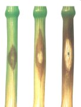

Búza szárrozsda (feketerozsda)
Puccinia graminis
A rozsdagomba a talajon telel át téli spóra (teleutospóra) alakban. tavasszal a gabonát fertőzi meg. Nyáron a gomba nyári spóra (uredospóra) alakban fertőz. A fertőzés során a gabona bőrszövete (epidermisze) felszakad, túlzott párologtatás lép föl, csökken az ezermagtömeg.
Védekezés:
- vetésváltás
- gombaölő szerek (Indar, Vigil, Tilt)